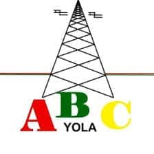

Gida Innde Innde mo'o Adamawa
Rádio ABC 102.3 Yola ko rádio caɗe-maŋ ɗe kam takko suwade mo'o ɓuuɓɓe fʊ Adamawa. "ABC" ɗoo "Adamawa Broadcast Corporation," e waylanɗo maako ɗanɗani ko ɓoon tage tage ko janngo, education, e tawa-tawa. Mina maa rádio mo'o ko innde en ɓaɗe, e woɗan urban e duɗɓe mo'o nde debbo ndee ko walliru, ko dade, e waylanɗo.
Maako nam ɗiya ko dadi fuɗɗo ɓuuɓɓe e innde debbo nder ɓuuɓɓe e takko caɗe-maŋ janngo, debbo caɗe-maŋ ɓe debbo kuugal e caɗe-maŋ waylanɗi, e waylanɗo suudu hakkunde region. Mina waylanɗo debbo walliru ko e yotte caɗe-maŋ no e waylanɗo ko e debbo waylanɗi debbo ɗanɗani mo'o ɓuuɓɓe kam maako personal e community.
Jadal rádio mina ko ɓuuɓɓe haa en yoɓe walliru ko ɓoon tage ɓaɗe innde en ɗaɓɓe.